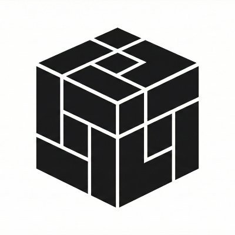
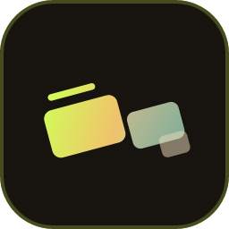

Find games, communities, news, and people who care about onchain gaming without hunting through scattered chats.
The home of Starknet gaming
One hub for players, builders, projects, and onchain games.
Starknet Gaming brings the ecosystem together: discover games, follow project updates, join community conversations, and track the news, recaps, and moments that move Starknet gaming forward.
News
Recaps
Updates
Community
0Games tracked
0Categories
0Live now
HubNews & community
Built as the front door for Starknet gaming.
The ecosystem needs more than a list. It needs one recognizable home where games, communities, updates, playtests, and ecosystem stories can be found together.
Share announcements, launch updates, playtest calls, and product feedback with an audience that is already gaming-focused.
Turn Starknet gaming into a visible, coordinated movement with recaps, reviews, ecosystem digests, and shared momentum.
Starknet Gamers is where the ecosystem talks.
A Telegram group for players, builders, founders, influencers, and curious newcomers to coordinate around Starknet gaming.
Community mission
Respect, hype, competition, and real gamer energy.
The group exists to make the ecosystem louder, more useful, and easier to enter. Players discover games and people. Developers share updates, find playtesters, and get real reactions from real players. No gatekeeping - just a shared place for Starknet gaming to grow.
Centralize activityA single hub for Starknet game news, communities, project announcements, and player conversations.
Help projects find playersTeams can share updates, request playtesters, collect feedback, and build real community momentum.
Make onboarding easierNewcomers get one clear place to understand what to play, who to follow, and where to ask questions.
Grow ecosystem mediaThe outlook includes X recaps, project reviews, weekly or monthly gaming digests, and broader ecosystem support.

Shared world
A visible home for every Starknet gaming community.
Players, builders, founders, and creators need one place to meet before the next playtest, recap, launch, or tournament moment.
News, recaps, updates, and community signal.
The goal is to make Starknet gaming easier to follow: project drops, ecosystem summaries, playtest opportunities, reviews, and the conversations around them.
Fresh launches and announcements
Surface what teams are shipping so players and builders do not miss important moments.
Weekly and monthly ecosystem summaries
Turn scattered updates into readable snapshots of what changed across Starknet gaming.
Project progress and playtests
Give games a focused channel to find testers, collect feedback, and keep momentum visible.
A real gamer coordination layer
Connect players, developers, founders, influencers, and newcomers around shared goals.
Registry
Search by game name or description, then filter by launch status. Entries are grouped by genre so the directory stays easy to scan.
No games match this search yet. Try another keyword or send Starknet Gaming an update.
Recently spotted
Projects below are being tracked while details are verified. They are intentionally separated from the confirmed registry.
Ecosystem rails
Most fully onchain Starknet games share infrastructure that makes Cairo gameplay, wallets, and session-based onboarding practical.
 Dojo Engine
Dojo Engine
The game engine many fully onchain Starknet teams use to build worlds, systems, and provable gameplay in Cairo.
Onchain gaming
@ohayo_dojo
Website
 Cartridge
Cartridge
Wallet and session-key tooling that helps players enter games with smoother interactions and fewer crypto-native interruptions.
Wallet tooling
@cartridge_gg
Website
Partners
Projects helping Starknet Gaming connect ecosystem data, tooling, payments, and community discovery.

AegisStarknet analytics platform for protocol metrics, DeFi insights, transaction monitoring, and holder distribution intelligence.
Starknet analytics
Website

StarkRelayHQStarknet-native relay for AI model access, letting users connect a wallet, pay with Starknet assets, and use Claude, GPT, and more.
Starknet AI access
Website